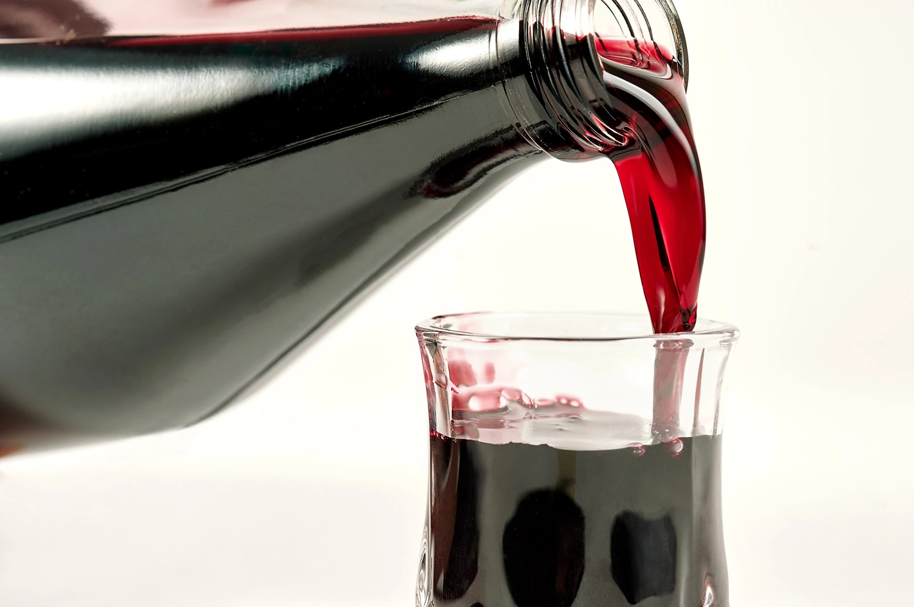
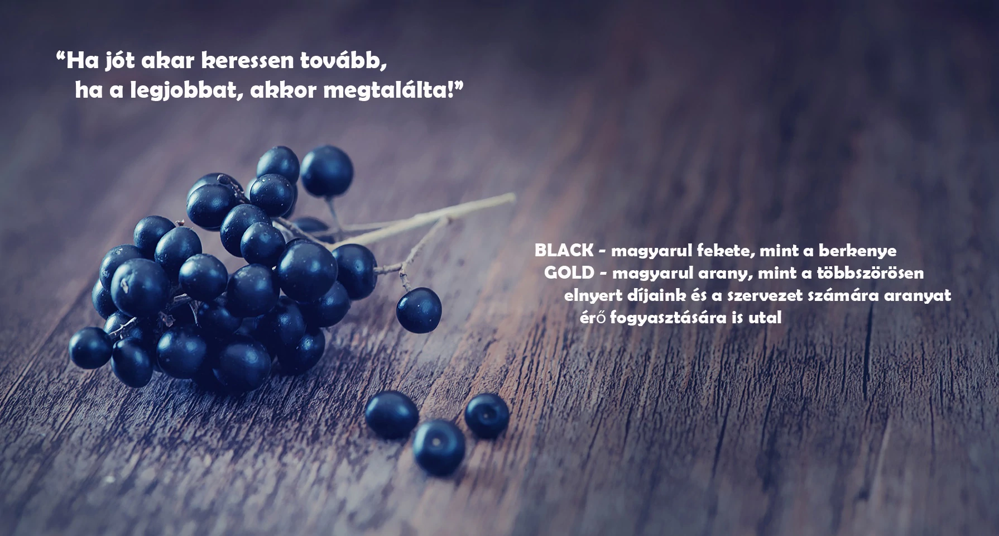
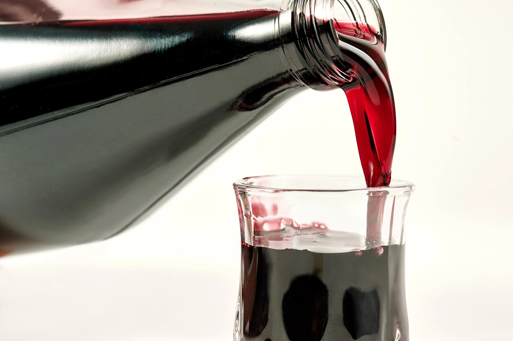
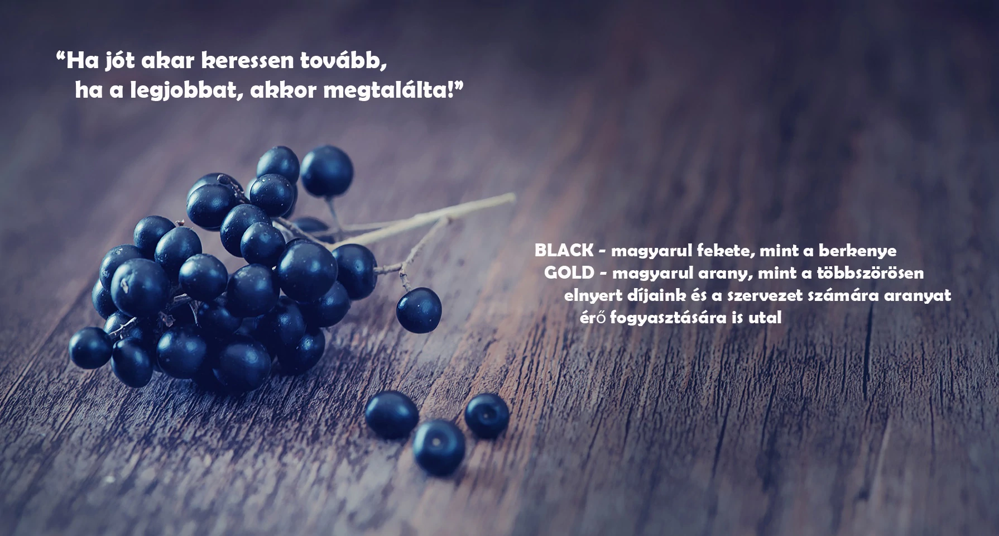

Bemutatkozás
Tisztelettel üdvözöljük weboldalunkon!
Mindjárt az elején azzal a fontos információval szeretnénk kezdeni, hogy elsődleges célunknak azt tekintjük, hogy minden kedves érdeklődő/vásárló számára, egy minden részletre kiterjedő hiteles és korrekt tájékoztatást nyújtsunk erről a nagyszerű prémium minőségű bio termékről.
Ebben is szeretnénk eltérni, illetve különbözni azon weboldalaktól, amelyek sajnos sok esetben rendkívül kevés információval látják el a termék iránt érdeklődőket, legyen szó akár az eredetéről, akár a minőségéről stb. Ezekről mi egy közel 4 éve tartó fogyasztói, piackutatói, termesztési, préselés technikai, szüretelési, palackozási tapasztalat alapján jutottunk el egészen a forgalmazásig.
Az évek során rengeteg tapasztalatot gyűjtöttünk annak érdekében, hogy a létező legjobb minőségű arónia préselt levet tudjuk forgalmazni Magyarországon. Az összes itthon forgalmazott arónia levet kipróbáltuk, amelyeknek túlnyomó többsége szinte ihatatlan (pláne önmagában), ez főleg az import termékekre jellemző, de az itthon termesztett és előállított (kézműves) termékek is rendkívül savanyúak.
(Ennek okairól beszámolunk)
Rengeteg weboldalon olvasható például, hogy egész évben elérhető, korlátlan mennyiségben, ez meg, hogy lehetséges egy olyan terméknél, ami egy adott évben 1x terem, egy bizonyos mennyiségben???
(erről is olvashatnak az oldalunkon)

FONTOS:
Szeretném felhívni minden kedves vásárló/érdeklődő figyelmét, hogy az általunk forgalmazott arónialé, minden évben limitált (korlátozott) mennyiségben érhető el, erről a termékek menü alatt tájékoztatjuk Önöket!